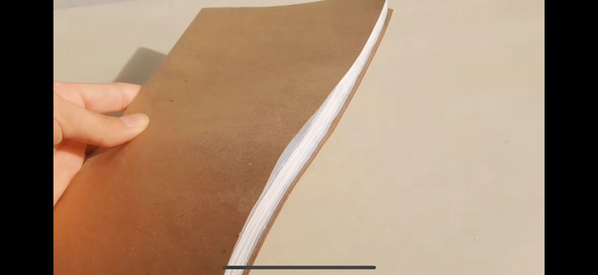
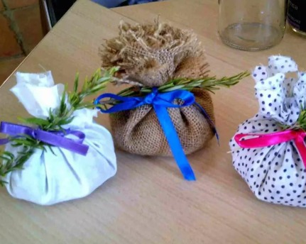
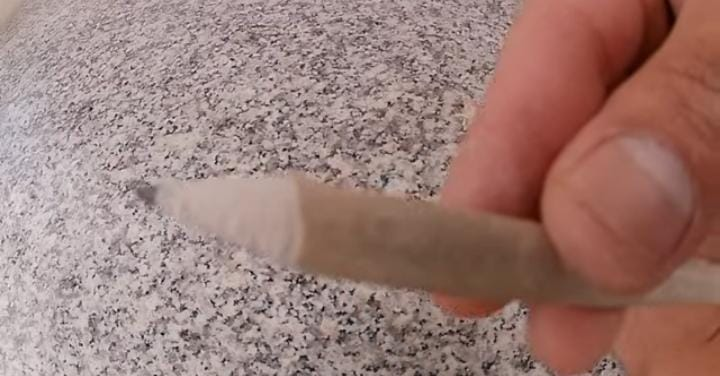
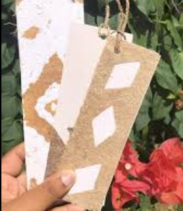
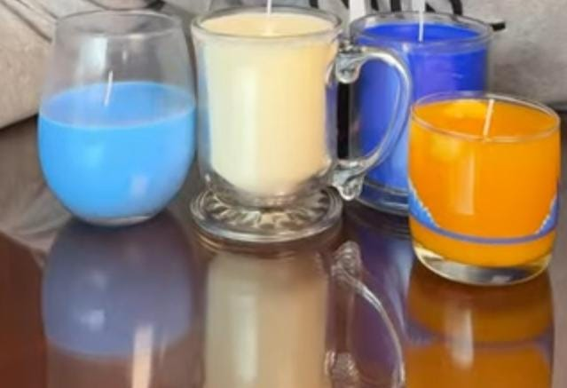
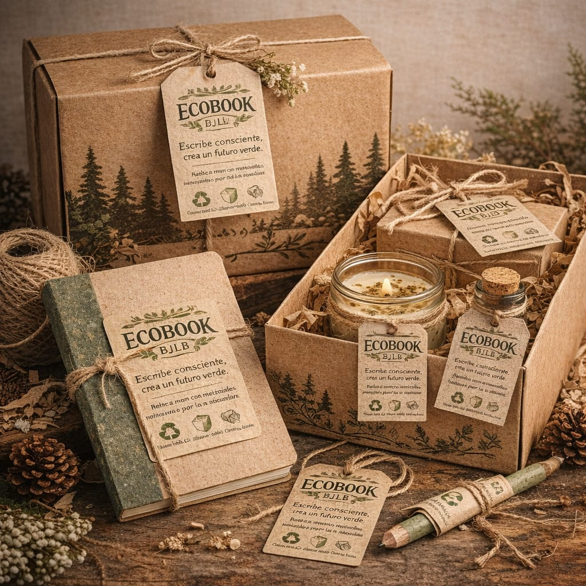
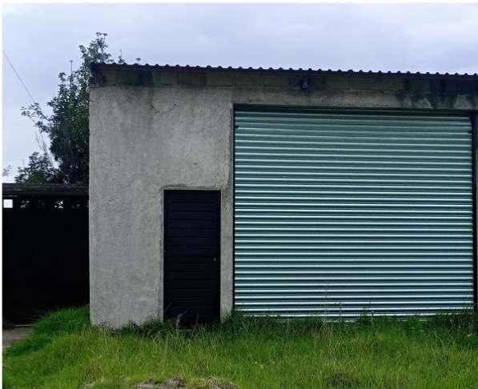

Escribe consciente, crea un futuro verde
En esta sección presentamos el desarrollo de nuestras ideas, avances y características principales de Ecobook; aquí compartimos el proceso creativo, los materiales utilizados y el impacto ambiental positivo que buscamos generar a través de nuestras propuestas.

La libreta ecológica es el corazón de Ecobook, está hecha con materiales reciclados y reutilizados, lo que ayuda a reducir el uso de papel nuevo y a cuidar el medio ambiente.

Nuestro compartimiento es un pequeño bolsillo hecho con tela reciclada, dentro puede llevar hierbas naturales como lavanda o menta, que funcionan como aromatizante natural

El lápiz ecológico está elaborado con materiales reciclados o biodegradables, algunos pueden incluir semillas en la parte final para que, cuando termine su uso, pueda plantarse.

Sirve para organizar mejor la libreta y mantener el orden, demostrando que lo simple también puede ser ecológico.

La vela aromática se elabora con ingredientes naturales y puede colocarse en frascos reutilizados, además de decorar, crea un ambiente agradable sin usar productos dañinos para el medio ambiente.

La caja o empaque está hecha con cartón reciclado, protege el producto y mantiene la coherencia con la idea ecológica de Ecobook.

Espacio dentro del entorno escolar donde se presentan y venden los productos, UBICADA en: Cerca de Conj U los Sauces V, 50210 Sauces, Méx.
Grupo de trabajo encargado de la elaboración, promoción y venta, se basa en la colaboración, responsabilidad y compromiso con el medio ambiente.